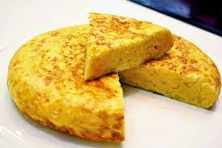

Spanish omelette

The Spanish omelette, known as "Tortilla Española," is a classic Spanish dish made with eggs, potatoes, onions, and olive oil. Slices of potatoes and onions are fried until tender, then mixed with beaten eggs and cooked in a skillet until it forms a thick, round omelette. It's a staple dish in Spanish cuisine, often served as a tapa or a light meal.
Ingredients:
- 4-5 large potatoes
- 1 large onion
- 6 eggs
- Extra virgin olive oil
- Salt
Steps:
- Peel the potatoes and cut them into thin slices. Peel and julienne the onion
- Heat a large frying pan with plenty of olive oil. Fry the potatoes and onion over medium heat until tender but not browned. Drain them in a colander.
- Beat the eggs in a large bowl and add the drained potatoes and onion. Mix well and let it rest for a few minutes.
- Heat some oil in a non-stick pan. Pour the egg, potato, and onion mixture into the pan. Cook over medium-low heat for a few minutes.
- Once the bottom is set, place a plate over the pan and carefully flip the omelette onto the plate. Then, slide it back into the pan to cook the other side.
- Once fully set and golden brown, remove from heat and serve